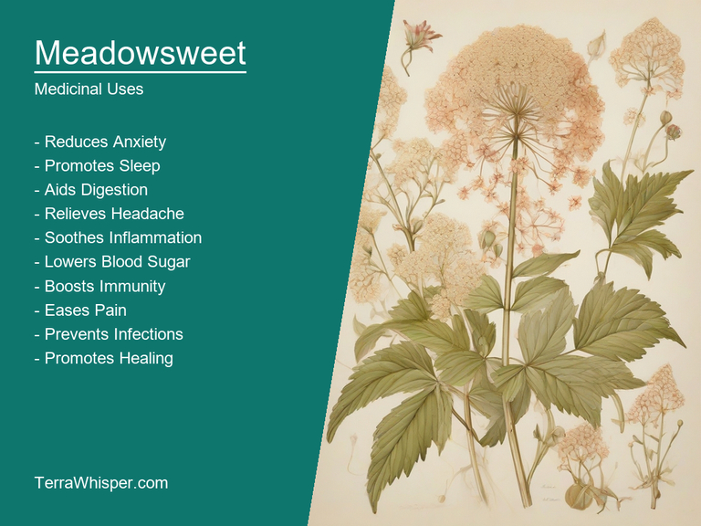
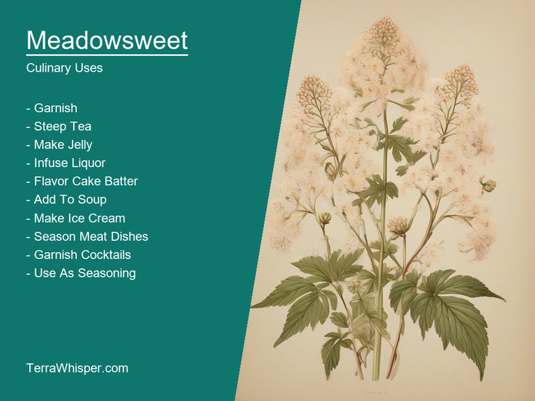
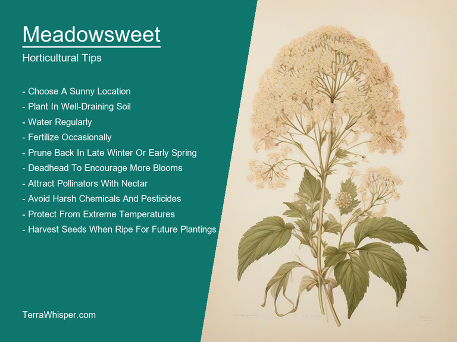
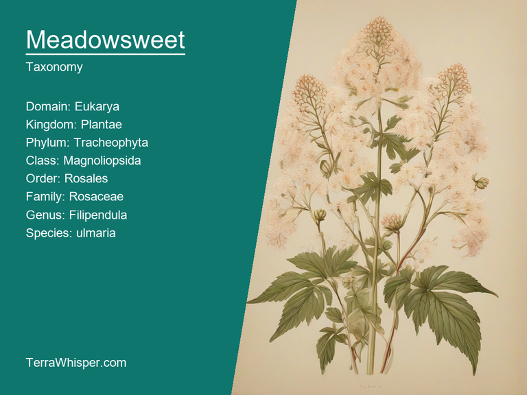
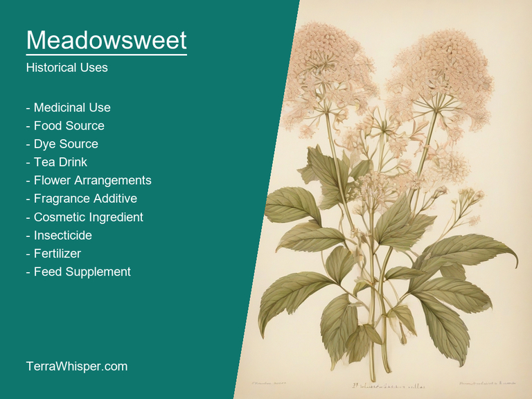

What To Know Before Using Meadowsweet (Filipendula Ulmaria)

Meadowsweet, scientifically known as Filipendula ulmaria, is a highly useful plant with both medicinal and culinary applications. It has been used since ancient times for its therapeutic properties while at the same time being incorporated into many delicious recipes. The plant's flowers are often steeped in boiling water to create an attractive mead-like beverage that also contains medicinal benefits. Meadowsweet is known for its pain relief properties due to salicylic acid, which it contains naturally, similar to the one used in aspirin. It is widely recognized as a natural remedy for treating various ailments like sore throats, stomach ulcers, and inflammation. Moreover, this herb has been utilized extensively for its culinary purposes, adding a delicate, pleasing flavor to dishes. Its flower heads are commonly used to create attractive garnishes and even to impart a subtle sweetness to desserts.
In addition to the plant's medicinal and culinary uses, Meadowsweet is also an excellent ornamental plant. It flourishes well in damp environments like near rivers, streams, or lakesides. Filipendula ulmaria can grow up to 5 feet tall and displays attractive clusters of small, sweetly scented flowers, adding both color and fragrance to any garden setting. The plant's green, heart-shaped leaves also contribute to its aesthetic appeal. As a perennial plant, Meadowsweet has the ability to regrow each year from its roots, making it a resilient, adaptable, and long-lasting addition to any landscape or home garden.
Finally, botanically speaking, Meadowsweet belongs to the Rosaceae family, which also includes other well-known plants such as apples, pears, roses, and almonds. This connection highlights its versatility in both culinary and medicinal applications. The plant has been widely distributed throughout Europe, Asia, and North America, where it can be found thriving within grasslands and wetland areas. Historically, Meadowsweet was utilized by Native American tribes for its healing properties, with its roots boiled to create a tea used to treat various diseases including scurvy and digestive issues. Today, the plant continues to be celebrated for its multifaceted nature and versatility within botany, horticulture, and human health.
In this article, you will discover what are the medicinal and culinary uses of meadowsweet. Then, you'll learn how to cultivate it, what is its botanical profile, and how it was used historically.
What Are The Medicinal Uses Of Meadowsweet?
Meadowsweet (Filipendula ulmaria) has many health benefits, such as helping in reducing inflammation and treating various gastrointestinal issues like stomach pain and acid reflux. The plant is also known to ease the symptoms of rheumatism and arthritis by soothing aching joints. Moreover, it can be used for alleviating cough and cold symptoms due to its anti-bacterial, antiviral, and expectorant properties.
The following illustration lists the most important uses of meadowsweet in medicine.

Meadowsweet contains various medicinal constituents such as salicylic acid (an active ingredient in aspirin), tannins, flavonoids, volatile oils, iridoids, and mucilage, among others. These components work together to provide its diverse health benefits. The plant's ability to reduce inflammation can be attributed to the presence of salicylic acid and other compounds that help in inhibiting the production of pro-inflammatory mediators.
When it comes to using Meadowsweet, the most common parts employed are its flowers and leaves. These parts are often utilized in creating various medicinal preparations such as teas, tinctures, and extracts. The tea infusions tend to be the most popular form of consumption due to their pleasant taste and easy accessibility. When taken internally, Meadowsweet can provide relief for stomach ailments, respiratory conditions like coughs and bronchitis, and even help in calming the nervous system.
While Meadowsweet generally holds many benefits without any major side effects, it is essential to be cautious about its use. A possible drawback of consuming large quantities is an increased risk of developing gastrointestinal irritation or allergic reactions. In addition, individuals with a history of salicylate sensitivity should avoid using Meadowsweet, as it contains salicylic acid that can potentially exacerbate their condition.
To reap the benefits of Meadowsweet while minimizing risks, a few precautions must be observed when integrating this plant into one's regimen. It is advisable to consult with a healthcare professional before starting its consumption if you have pre-existing conditions, particularly if you are pregnant or breastfeeding, taking medications, or undergoing other treatments. Additionally, always pay close attention to the recommended dosages for your specific needs and follow any guidelines provided by the product manufacturer. By exercising caution and adhering to these precautions, you can safely enjoy the many health advantages Meadowsweet (Filipendula ulmaria) has to offer.
What Are The Culinary Uses Of Meadowsweet?
Meadowsweet, scientifically known as Filipendula ulmaria, is a versatile plant with several culinary uses. It has been incorporated into various types of meals and beverages throughout history. This herbaceous perennial plant belongs to the Rosaceae family and is native to Europe and Asia.
The following illustration lists the most common uses of meadowsweet for culinary purposes.

In terms of its flavor profile, Meadowsweet carries a subtle yet complex combination of aromas including hints of honey, vanilla, and lemon. Often times it has been likened to almonds due to its sweet, nutty undertone. These characteristics make it an ideal ingredient for enhancing the taste of different dishes, especially those requiring sweet and floral notes.
The edible parts of Meadowsweet encompass the flowers, leaves, stems, and roots. It's common to use the plant in its entirety as it is all considered safe to consume. However, some may choose only specific parts depending on their desired culinary goals and preferences. For instance, the flowers contribute beautifully to fragrance while the leaves, which taste more astringent, can be used for tea preparation, thereby adding a unique flavor profile.
When it comes to culinary tips, Meadowsweet can be utilized in various ways within your cooking. Firstly, its flowers are perfect for garnishing cakes or salads with their sweet and floral appeal. The leaves, on the other hand, can serve as an interesting ingredient in salads or herbal tea blends. The stems can be used to infuse water, creating a refreshing beverage with a unique twist. And if you're feeling adventurous, try cooking your meal with Meadowsweet-infused broth or marinade for an unforgettable culinary experience.
As a side note, it is essential to mention that while Meadowsweet is generally considered nontoxic and safe, caution must be taken when consuming large quantities of this plant due to its potential side effects such as nausea or vomiting in some individuals. Additionally, pregnant women should avoid excessive intake to ensure their wellbeing throughout the pregnancy.
How To Cultivate Meadowsweet In Your Garden?
The horticultural aspects of Meadowsweet (Filipendula ulmaria) concern its cultivation needs, planting methods, care instructions, harvest suggestions and any issues it may face with pests and diseases. As a member of the Rosaceae family, Meadowsweet thrives in well-drained soil that is slightly acidic to neutral (pH 6.0 to 7.5). It prefers partial shade or full sun conditions with exposure to around six hours of direct sunlight per day.
The following illustration lists the most important tips to cutlitvate meadowsweet.

When planting Meadowsweet, first select a suitable location in your garden. Choose an area that receives enough sunlight and has well-drained soil. Dig a hole twice the size of the root ball to give the plant ample space for growth. Place the plant at the desired depth with the root ball submerged, and firm the soil around it. Water the newly planted Meadowsweet thoroughly but do not overwater it as it may lead to root rot.
Caring tips include giving enough space between plants to prevent competition for water, nutrients and sunlight. Regularly fertilize with a balanced, organic fertilizer once or twice per year to encourage growth and healthier foliage. Prune Meadowsweet when young during the growing season to promote bushy growth and maintain its shape. Mulch around the base of the plant will keep it cooler in summer and warmer in winter while also reducing weeds, hence minimizing competition for nutrients and water.
To harvest Meadowsweet flowers, wait until they reach full maturity - when they have opened completely and are ready to bloom. They usually start blooming in early summer and continue through late summer. Harvest the blossoms during a dry day, using scissors or pruners to cut them just above their base without damaging the plant. To preserve their beauty and aroma, hang the flowers upside down in a cool room in bunches tied together with twine.
Pests and diseases affecting Meadowsweet include aphids, which can damage new growth by sucking sap from plants, as well as leaf spots caused by various fungi and bacteria. To combat these issues, monitor your plants regularly for any signs of distress and take appropriate action like removing infected parts or applying suitable pesticides to control the problem. Crop rotation can also help prevent diseases by reducing soil-borne pathogens from building up in one specific location year after year.
What Is The Botanical Profile Of Meadowsweet?
Meadowsweet, with botanical name Filipendula ulmaria, belongs to the domain Eukaryota, kingdom Plantae, phylum Magnoliophyta, class Magnoliopsida, order Rosales, family Rosaceae, genus Filipendula and species Filipendula ulmaria. Common names for this plant include Queen of the Meadow, Bridewort, and Dropwort.
The following illustration display the botanical profile of meadowsweet.

Variants exist in Meadowsweet, specifically its European variety Filipendula vulgaris and the North American variant Filgendula rubra. Although they are similar, these have a slightly different appearance due to variations in leaf shape and flower color. The European variety has broader leaves while the other ones come with more slender, rounded leaves. Also, the flowers of F. rubra appear more reddish as opposed to the pale yellow-green hue of the other varieties.
Meadowsweet primarily thrives in moist and cool regions around Europe and North America. It is found growing naturally near wetlands, stream beds or anywhere with rich soil, damp meadows and bogs where there is adequate sunlight for growth. The plant does particularly well in slightly acidic to neutral conditions as a part of its natural habitat.
Meadowsweet's life cycle typically consists of the seed being dispersed by wind, animals or even water. Once settled in fertile soil, it germinates and grows over two to four years before flowering and reaching maturity. It reproduces sexually through seeds and asexually via its rhizomes. This plant is primarily grown as an ornamental species for gardens and landscapes but also has medicinal purposes with extracts from its leaves being used in traditional medicine.
What Are The Historical Uses Of Meadowsweet?
For centuries, Meadowsweet has been a widely known plant that plays a crucial role in traditional medicine. It is believed to possess potent healing properties and have multiple therapeutic benefits such as reducing inflammation, soothing gastrointestinal issues, easing arthritis pain, and treating colds, coughs, and other respiratory conditions. Furthermore, the plant's flowers and leaves are used to make herbal teas which are known for their calming effects on the mind and body.
The following illustration lists the most well known historical uses of meadowsweet.

Divination practices involving Meadowsweet can be traced back to ancient times, when people looked at various aspects of its growth, blooming, and other physical properties for insight into the future. The plant is frequently utilized in predictive rituals and spells that involve using its leaves or flowers as part of a divinatory spread. For instance, a Meadowsweet leaf could be cast on a bed or an altar, allowing people to seek guidance from the spirit realm on matters related to love, healing, prosperity, protection, or even justice.
Folklore and legends have surrounded this humble plant for generations, with stories that often involve its use in rituals and ceremonies designed to bring good fortune and protect against harmful entities. One such legend tells of a wise man named Ardanus who had been cursed by the gods, making him blind. To lift the curse, he was advised to pick Meadowsweet flowers on Midsummer's Eve and place them in his eyes while chanting a specific incantation. When he did this, his sight was miraculously restored, transforming Meadowsweet into an essential ingredient in many healing potions and charms.